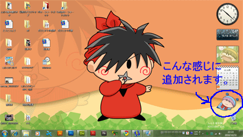

壁紙などのPC用の素材を順次公開していきます。（レイアウト編集中）
スマホ用ちびっこ妖精壁紙 （2014/9/27公開）
700000Hit記念に、記念絵を改造して壁紙を作成しました。とにかく派手なのがいいなかと思い、かなりうるさい壁紙になっています。
お使いのスマホの解像度に対応する画像ファイル名をクリック、表示された画像をスマホに保存し、スマホの壁紙設定から保存した画像を壁紙にセットしてください。
Android用は機種によって画面サイズが異なるため、1080x1920版をダウンロードして、うまく表示できるよう調整してみてください（手抜きな説明ですみません）。
＜通常版＞
iPhone5/5s用 chibipaper_640x1136.png
iPhone6用 chibipaper_750x1334.png
Android/iPhone6 Plus用 chibipaper_1080x1920.png

{kind=link}
{kind=link}
{kind=link}
＜視差効果対応版（iOS7以上）＞
iPhone5/5s用 chibipaper_744x1392.png
{kind=link}
ヤマネちゃん壁紙 （2012/10/6公開）
600000Hit記念に壁紙を作成しました。
（バックのリボンを持ったヤマネは８１話のシーンからお借りしました）。
対象ファイルを右クリック→「対象ファイルをダウンロード」を選んでダウンロードし、PCの壁紙に設定してください。
お使いのPCの画面解像度と一致もしくは近い壁紙をご利用くださいね。
（あなたのPCの画面解像度は
です）
＜ワイド画面用＞
yamanepaper1920.png (1920×1080)
yamanepaper1366.png (1366×768)
yamanepaper1280.png (1280×800)
{kind=link}
{kind=link}
{kind=link}
＜通常画面用＞
yamanepaper1440.png (1440×1080)
yamanepaper1024.png (1024×768)
yamanepaper800.png (800×600)
{kind=link}
{kind=link}
{kind=link}
ムルモのサイドバーガジェット （2010/11/1公開）
450000Hit記念に、サイドバーガジェットを作成しました。
※サイドバーガジェットとは、Windows Vista以降（Windows 7含む）の機能で、
PCのデスクトップに時計やカレンダーなどの小物を置ける機能です。
（あなたのPCのOSは
ムルモのサイドバーガジェットをダウンロードする
適当なフォルダにダウンロードして実行後、「インストールする(I)」を選んでください。デスクトップにムルモのサイドバーガジェットが追加されます。
ムルモをクリックするとマシュマロを食べる、ただそれだけです…。
（１４１話「ムルモと空飛ぶ赤ちゃん」冒頭のムルモをトレースしました）

ヤシチくん壁紙 （2010/3/18公開）
400000Hit記念に壁紙を作ってみました。
対象ファイルを右クリック→「対象ファイルをダウンロード」を選んでダウンロードし、PCの壁紙に設定してください。お使いのPCの画面解像度と一致もしくは近い壁紙をご利用くださいね。
（あなたのPCの画面解像度は
です）
＜ワイド画面用＞
yashichipaper1920.png (1920×1080)
yashichipaper1366.png (1366×768)
yashichipaper1280.png (1280×800)
{kind=link}
{kind=link}
{kind=link}
＜通常画面用＞
yashichipaper1440.png (1440×1080)
yashichipaper1024.png (1024×768)
yashichipaper800.png (800×600)
{kind=link}
{kind=link}
{kind=link}
(2014/9/27)